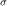
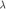
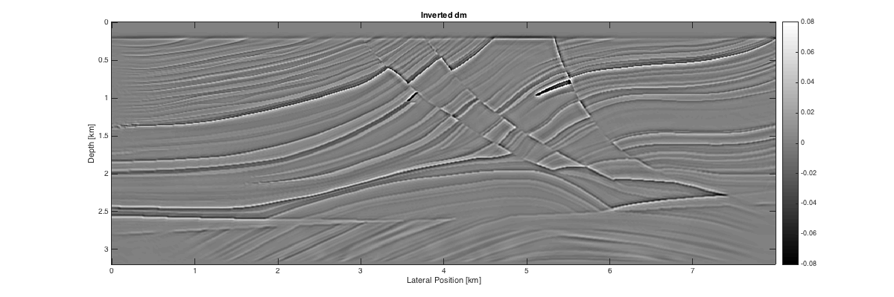
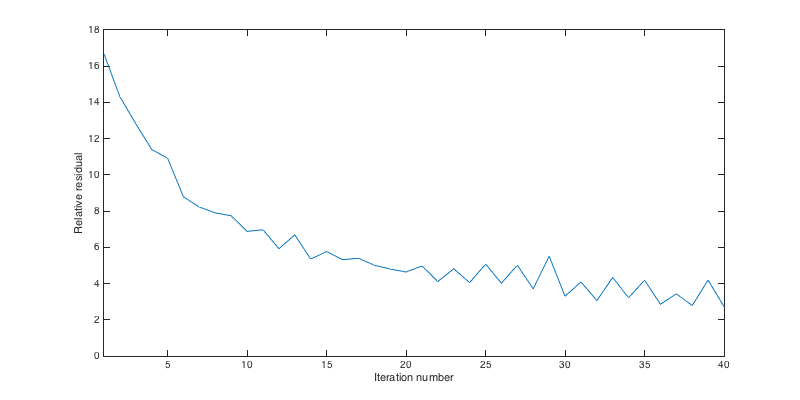

Sparsity promoting LSRTM with linearized Bregman
Example script for running least-squares RTM with sparsity promotion and source subsampling on the Marmousi model.
Author: Philipp Witte Date: February 2016
Contents
Set paths to result,data,model etc.
clear all; clc; rng('default') % Load software release functions % SLIM_APPS.tools.algorithms.TimeModeling addpath(genpath('~/SLIM-release-apps')); % paths and name of results and snapshots snapshotX = 'UpdateTest_X.mat'; snapshotZ = 'UpdateTest_Z.mat'; result = 'Result.mat'; params = 'Parameters.mat'; % pull data and model % if ~exist('../data/modelMarmousi.mat','file') % cd ../data/; ! scons; cd ../examples/; % end % Marmousi slowness^2 model [s^2/km^2] load modelMarmousi.mat % Load 2D data cube [ns x nrec x nsrc] % load ../data/linDataMarmousi.mat
Modeling parameters
Set up a structure that contains information about the velocity model and the source/receiver geometry of the input data.
% model parameters model.o = [0, 0, 0]; % Origin [m] model.n = [320, 800, 1]; % no. of grid points [z,x,y] model.d = [10, 10, 10]; % grid spacing [m] model.freesurface = 0; % data parameters model.f0 = 0.030; % peak frequency [MHz] model.T= 4000; % Recording length [ms] model.NyqT=0:4:model.T; % Shot record time axis [ms] % source/receiver position [m] model.xsrc = 25:25:(n(2)*d(2)); model.zsrc = 10*ones(size(model.xsrc)); model.ysrc = 0*ones(size(model.xsrc)); model.xrec = 5:10:n(2)*d(2)-5; model.zrec = 210; model.yrec = 0; % Code specific options model.save = 'RAM'; % save wavefields in memory model.type='full'; % acquisition geometry model.space_order=4; % Order of Laplacian % Domain decomposition model.ddcompx = 1; model.ddcompz = 1; model.ddcompy = 1;
LSRTM parameters
Define the number of iterations for the linearized Bregman method, as well as the L2 norm of the noise  , the thresholding value  and the number of sources per iteration. Furthermore, set up a structure that defines which preconditioners are used. All preconditioners are disabled as default and can be enabled by setting them to '1'.
% LSRTM options options.iterations = 40; options.lambda = []; options.sigma = 0; options.numShots = 8; % No. of shots per Bregman iteration options.snapshotX = snapshotX; options.snapshotZ = snapshotZ; % Preconditioners precon.modelDepth = 1; precon.modelTopmute = 1; precon.dataScaling = 1; precon.dataTopmute = 1;
Setup grid and modeling options
% Calculate optimal grid size and time step [m,model,dmTrue]=Setup_CFL(m,model,dm); % Source wavelet q=sp_RickerWavelet(model.f0,1/model.f0,model.dt,model.T);
CFL conditions gives dt = 0.57736ms and d = 5 5 5 m Velocity interpolated on new grid
Call algorithm and save results
Runtime per iteration (one demigration and one migration) for this example was ~20 minutes.
% [dm,info] = linbregLSRTM(dData,model,m0,q,precon,options); % save(result,'dm','info'); % save(params,'model');
Plot results
load Result.mat load Parameters.mat x = linspace(0,7.995,model.n(2)); z = linspace(0,3.195,model.n(1)); % true image figure('Position',[400,400,1200,400]); imagesc(x,z,reshape(-dmTrue,model.n)); xlabel('Lateral Position [km]'); ylabel('Depth [km]'); colormap gray; caxis([-1 1]*8e-2); colorbar title('True dm'); % lsrtm image figure('Position',[400,400,1200,400]); imagesc(x,z,dm); xlabel('Lateral Position [km]'); ylabel('Depth [km]'); colormap gray; caxis([-1 1]*8e-2); colorbar title('Inverted dm'); figure('Position',[400,400,800,400]); plot(info.residual) xlabel('Iteration number'); ylabel('Relative residual'); axis([1 40 0 18]); 